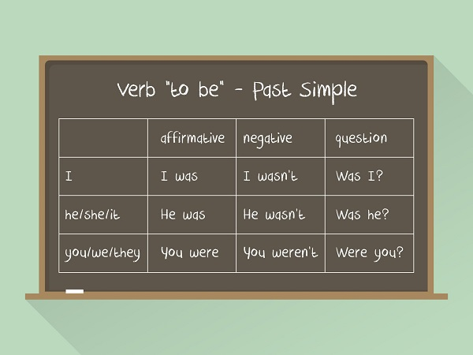

O Simple Past é usado para falar sobre ações que foram finalizadas no passado, assim como situações ou costumes que se repetiam e não acontecem mais. Para identificar o tempo verbal de uma frase, procure pelo verbo.

O passado simples dos verbos regulares é marcado pelo sufixo “ed”. Já os verbos irregulares
possuem formas próprias, e caso surja alguma dúvida é só consultar a tabela do passado dos
verbos irregulares nesse mesmo site.
Em frases afirmativas, a forma do passado simples é: Sujeito + passado do verbo +
complemento.
She broke her leg. (Ela quebrou sua perna).
He studied a lot yesterday. (Ele estudou bastante ontem).
The dog barked a lot last night. (O cão latiu bastante na noite passada).
They woke up late this morning. (Eles acordaram atrasados esta manhã).
Para as sentenças negativas é necessário utilizar o auxiliar “did” + “not” para todas as
pessoas. O auxiliar deve vir sempre após o sujeito. Ele pode vir na sua forma completa,
“did
not”, ou abreviada, “didn’t”. Pelo fato de já estarmos usando o auxiliar do passado,
“did”,
o verbo deve vir sempre no infinitivo sem o “to”, e jamais conjugado no passado.
They did not wash the car this weekend. (Eles não lavaram o carro esse fim de
semana).
We didn’t send e-mails to our parents. (Nós não mandamos e-mails para os nossos
pais).
I didn’t see Jack at the party yesterday. (Eu não vi o Jack na festa ontem).
She did not cut her nails. (Ela não cortou suas unhas).
Oportunidade: Curso de Inglês Online
Nas frases interrogativas, assim como nas negativas, é necessário utilizar o auxiliar “did”,
logo, vale relembrar que o verbo nunca deve vir conjugado. Na construção de frases
interrogativas, coloca-se primeiro o auxiliar “did”, seguido do sujeito + verbo no
infinitivo sem “to” + complemento.
Did Mary and Carol go to the mall last week? (A Mary e a Carol foram ao shopping semana
passada?).
Did Phillip buy his mother a gift? (O Philip comprou um presente para a sua mãe?).
Did Amanda sing at the festival? (A Amanda cantou no festival?).
Did John give you all this money? (O John lhe deu todo este dinheiro?).